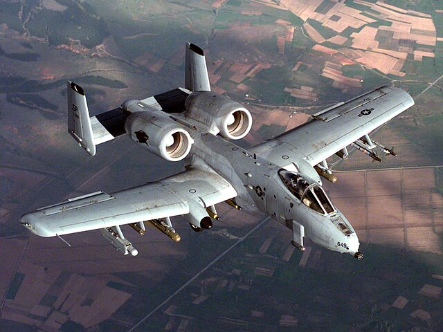

A-10 Warthog

The A-10 Warthog is a close air support aircraft. Made in 1977 the A-10 warthog is still one of the most feared aircraft today. The A-10 Warthog is iconic for its 30mm cannon making the iconic Brrrt sound when fired. The A-10 Warthog 30mm cannon can still be used to this day to destroy enemy ground targets. The A-10 Warthog is responsible for 987 tanks 926 artillery pieces 1,355 combat vehicles 10 fighters during desert storm. The A-10 Warthog has a max speed of mach 0.56 or 740 km per hour. The A-10 WarThog is still in service
Back